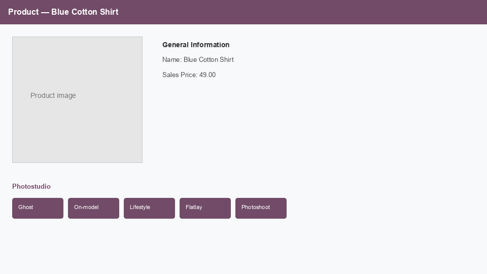
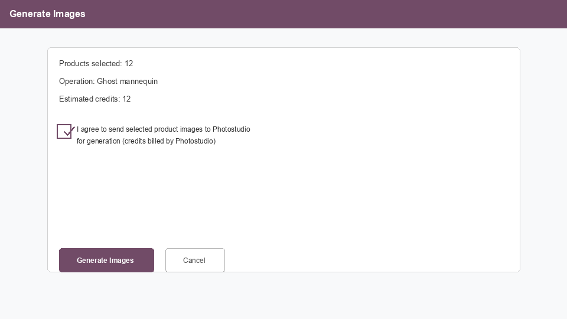
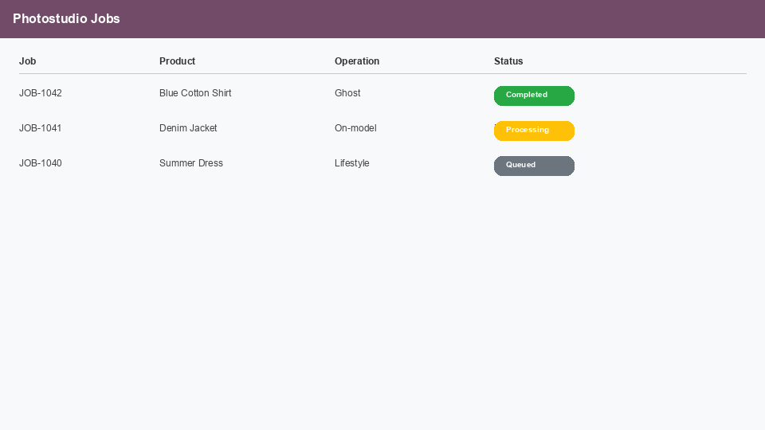

Odoo 19, Community and Enterprise. Photostudio Jobs API. Credits billed by Photostudio, not by Odoo.
Ghost On-model Lifestyle Flatlay Photoshoot Detail Marketplace reframe
This is not a text-to-image studio that invents a chair from the product name. It takes the photo on the product (or variant), runs a Photostudio job, and writes the result back when the job finishes.
Find Photostudio Connector in Apps and install it. Settings get a Photostudio tab. Product forms get generate actions. A Photostudio menu lists jobs. No extra desktop to learn.

Product form. Generate lives next to the product you already edit.
Open Settings, Photostudio. Paste your Jobs API URL and API key when you are ready to generate. The module installs without a key. Generate shows a clear configuration error until the key is set.
Good to know: the key authenticates to Photostudio. It does not unlock or license this Odoo addon.
Pick products, pick operations, see a credit estimate. Before the first upload of a batch you confirm that selected photos may be sent to Photostudio. If you choose to replace the main image, you confirm that too. Identical requests are skipped instead of billed twice.

Batch wizard. Opt-in before photos leave Odoo.
Work is asynchronous. Odoo polls Photostudio and attaches finished files to the product or variant. Open Photostudio, Jobs to see status without leaving Odoo.

Jobs list. Queued, running, done, failed.
Open a single variant and generate from that variant's own photo. Writeback targets that variant. Other variants stay as they were.
Read this before you install. It matters for GDPR and for your own data rules.
Generation sends data out. When you confirm, the module sends the selected product or variant main image, extra gallery images if that option is on, and job options (operation, pose, scene, background prompt, optional model catalog id). That request leaves your Odoo server and is handled by Photostudio under Photostudio terms. Do not send photos you are not allowed to share.
About your API key. The key is stored in Odoo settings. An administrator can still read it. Only enter a key you are allowed to use, and remove it if you uninstall the app.
Support: peter@photostudio.io
Do I need an API key?
Yes, a Photostudio Jobs API key, to generate. The Odoo app itself installs without one.
Will it overwrite my current product photo?
Only if you choose replace-main and confirm. Otherwise generated files are attached without silently replacing the live main image.
Is my data sent anywhere?
Yes, to Photostudio, after you confirm. Photos and job options leave your server. There is no local on-server model.
Which Odoo versions and editions?
Odoo 19, Community and Enterprise. Depends on the product app only. No website_sale required.
Does it invent a photo from the product name?
No. It starts from the garment photo on the record. That is the point of a fashion catalog connector.